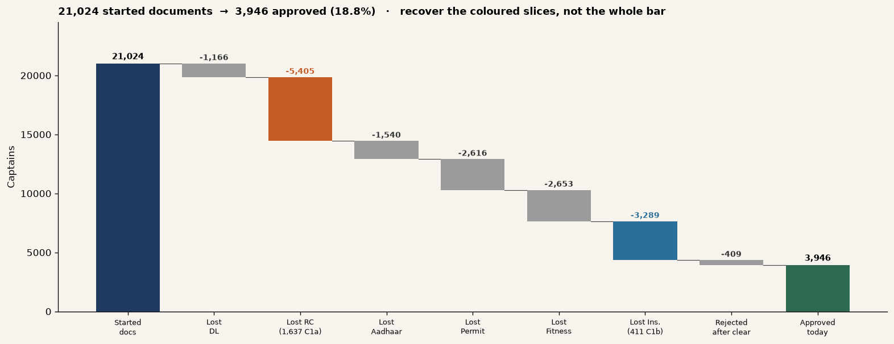

~134 from an RC 10-day grace (C1a) + ~50 from Insurance camera UX (C1b). Disjoint people. 98.7% of approved captains already take a first trip — A2O is the bottleneck, not R2A.

RC 1,637 uploaded, never passed, only blur / weak OCR / not legible. Expired, duplicate, name mismatch, wrong type are a different pile — do not defer those.
Insurance 411, same definition. Most Insurance volume never uploaded after Fitness. C1b does not claim that pile.
Later attempts pass higher, not lower. That is capture/UX. If the remainder were harder documents, later attempts would fall.
Other stages are real loss, wrong tool. DL 1,166 (cannot defer). Aadhaar/Permit/Fitness mostly never-uploaded or eligibility. Insurance never-upload ~2,530 is not C1b. Same camera on those screens = free rider after C1b — not in the 180.
| Attempt 1 | Attempt 2 | Attempt 3 | |
|---|---|---|---|
| RC | 65.3% | 68.4% | 74.1% |
| Insurance | 67.4% | 73.8% | 76.4% |
Pass floors from these rows and field RC 78.4% — not 85–90%.
Never-upload (RC ~2,388; Insurance ~2,530): a WhatsApp did not move completion. Next test is assisted onboarding, not 5× CAMP_WA_002.
C1a — RC provisional activation
C1b — Insurance capture UX
When: airport unfulfilled 40% vs ~3% elsewhere. 84% of that pain is 21:00–03:59. ~13 captains online vs ~37 by day. Surge is already high — a non-price constraint.
After the trip: suburban cancel 24% vs city-core 12%. Overnight return-in-20m: suburban 10.7% vs city-core 47%. Mix of suburban vs city-core does not change overnight. Two independent penalties, not a mix-shift.
Net ₹/cycle: worst×suburban ₹24.9 vs rest×suburban ₹56.5 vs worst×city-core ₹104.7.
ARA payout — derived, not % of fare
| Contrast | Approved | What it actually is |
|---|---|---|
| Got CAMP_WA_002 vs never got it | ~29% vs ~11% | Targeting. Recipients are chosen after they already cleared RC. |
| Clicked vs not, among delivered | 28.3% vs 29.8% (−1.5pp) | The honest contrast. Interval −3.6 to +0.6pp. Deck number: 0 pp lift. Do not scale 5×. |
Field vs app/paid 128–256/month if zero selection — that is the never-upload / continuation leak (Insurance abandon 26% fos vs 43% paid). Field recruits in person. 726 of C1a sit inside that gap. Do not add ~180 to 128–256. Test: randomised assist on app/paid (~900/arm for a 5pp approval lift). Do not harvest never-uploads with another WhatsApp.
| # | What | Impact | Cost / risk | Decision |
|---|---|---|---|---|
| 1 | C1a 10-day RC grace + C1b Insurance UX | ~180/mo (~134 + ~50) | Legal/T&S on C1a. ~1 FTE, ₹40–60k/mo visits. C1b: none | Ship C1b now. Legal on C1a. Reuse camera on other docs — not in the 180. |
| 2 | ARA at ₹35.4 / eligible leg — do not hire the airport | Sample ~₹69–103k/mo. Two independent penalties; mix does not shift overnight | Sampled trips. Rest-suburban, not city-core | 4-week pilot: returns up, cancels down, run-rate falling. Hire only after that fails to clear nights. |
| 3 | Stop 5× CAMP_WA_002; send/no-send RCT | Cost avoided + 4–6 week answer | Near zero — this week | Aadhaar pass + approved. ITT, not clicks. |
Do not spend next: 5× WhatsApp to chase never-uploads · blanket airport hiring · treating 128–256 as a supply target · 30% of fare as an ARA price. Queue after Monday: camera on remaining docs → assist RCT.